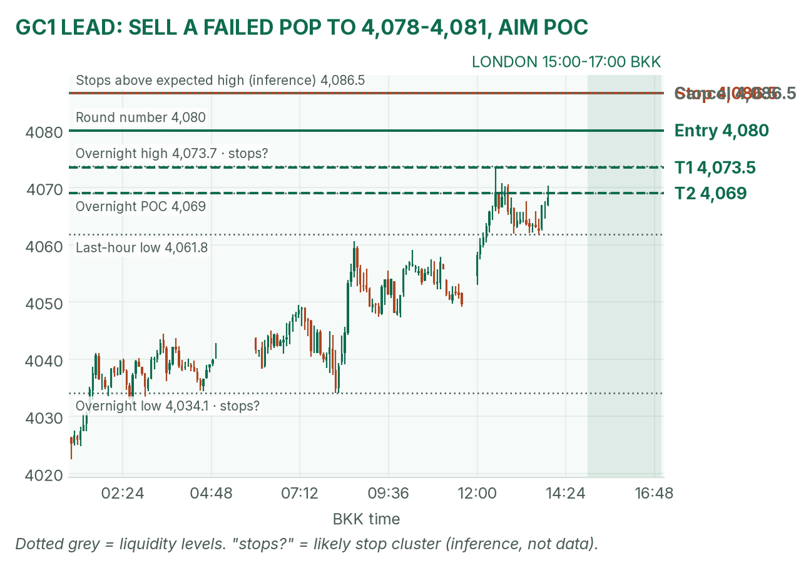
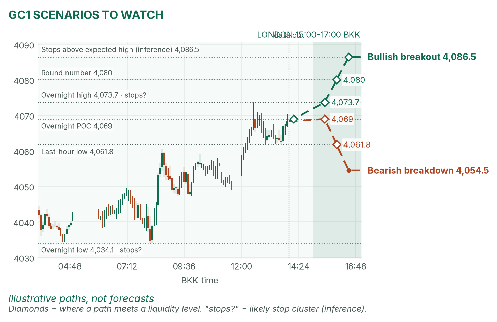
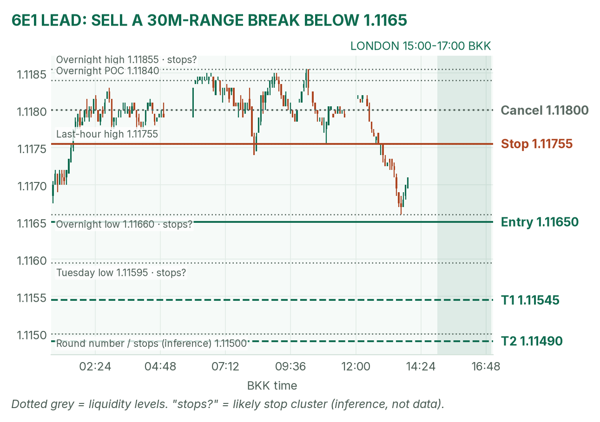
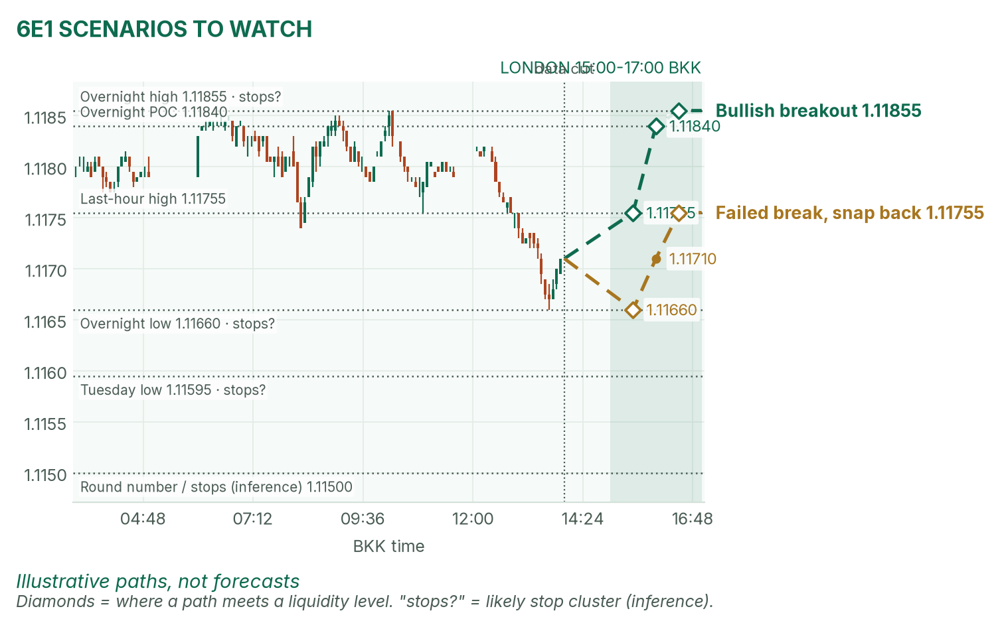

Gold bounced to the top of its range; the euro is leaning on its lows. Lagarde speaks inside the window.
Window 15:00–17:00 BKK (UK on GMT). Data cut 14:00 BKK: GC 4,068.3, 6E 1.11710 (Dec contracts, last completed 5-minute bar). Backup data today: my usual TopstepX feed refused login, so levels come from Yahoo Finance futures bars (about 10 minutes delayed), matching April's ranges. Levels only, flat by 17:00. Ideas, not advice. April's pre-London brief (~13:10 BKK) was read.
Summary
GC: sell a failed pop into 4,078–4,081, stop 4,086.5, targets 4,073.5 and 4,069. About 38% once filled.
6E: sell a break below 1.11650, stop 1.11755, targets 1.11545 and 1.11490. About 35%.
Lagarde speaks at 16:45, late in the window. No entries 16:40–16:47.
The market story
Tuesday's hot US CPI (October prices +0.4%, core +0.3%, against 0.3% and 0.2% forecasts) knocked gold down about 2% and pushed the 10-year yield to 5.00%. A December Fed hike now looks fully priced. Overnight, gold bounced back to the top of its range.
US bond markets are shut today for Veterans Day, so yields can't move to cushion a surprise. Higher yields are a headwind for gold, which pays no interest, and a strong dollar keeps the euro heavy. My read: gold's bounce is tired near 4,074, and the euro has already made a new low for the day.
News (BKK)
Time
Release
Forecast
Prior
Read
14:00
German final CPI (Oct)
flash 2.8%
n/a
Before the window. Result not verified.
16:45
ECB's Lagarde speaks
speech
n/a
Hawkish (sticky inflation): 6E lifts. Soft (growth worries): 6E slips. No entries 16:40–16:47.
Source: April's brief (Destatis for the flash). The 21:30 US stock open is outside the window.
Levels to watch
Level
GC
6E
Tuesday high / low
4,156.2 / 4,020.8
1.12670 / 1.11595
Overnight high (since 06:00)
4,073.7
1.11855
Overnight POC (busiest price)
4,069
1.11840
Last hour high / low
4,070.4 / 4,061.8
1.11755 / 1.11660
Overnight low
4,034.1
1.11660
Typical London range (last 3)
about 29 points
about 24 pips
Gold (GC1)
Bias: neutral to soft. Higher Fed odds lean against the bounce. The London gold rule: mark the 15:00–15:30 range and fade its edges back to the POC. A typical session from here spans roughly 4,054 to 4,086.
The trade: mean-reversion sell
Entry
4,078–4,081 (plan 4,080), after 15:30, on a pop above the range and the 4,073.7 overnight high that fails
Stop
4,086.5, above the expected session high and the stops likely parked there (my inference)
Targets
1R partial 4,073.5 · full target 4,069 (1.7R), the POC
Cancel
A trade through 4,086.5 before the fill, or no fill by 16:30
Probability
~38%, an estimate. Basis: in 42 sessions (Aug–Oct) GC London ranges mostly failed and fading to the POC worked best; not statistically significant.
Why: a liquidity grab (a quick run through a level to trigger stops, then a reversal) above the overnight high is the classic fade. If price never pops, there's no trade; don't sell into the middle. April agrees: she says a steeper Fed path makes gold bounces harder to hold.

GC 5-minute bars into the 14:00 cut. The sell zone sits above the overnight high, where buy stops likely rest (my inference).

Illustrative paths, not forecasts.
Scenarios to watch
Bullish breakout: a 15m close above 4,073.7 that holds. Aims for 4,080, then 4,086.5.
Bearish breakdown: a 15m close below 4,061.8 (last-hour low). Aims for about 4,054.5, the low end of the typical range.
Euro (6E1)
Bias: bearish. The euro fell 0.51% Tuesday as the dollar jumped on CPI, and it just printed a fresh overnight low at 1.11660. The 6E London rule is to trade breakouts of the 15:00–15:30 range. A pip is 0.0001.
The trade: bearish range breakout
Entry
Sell stop 1.11650 after 15:30, below the 1.11660 overnight low (if the 30m range low sits above it)
Stop
1.11755, above the last-hour high
Targets
1R partial 1.11545 · full target 1.11490 (1.5R), past Tuesday's 1.11595 low toward the 1.1150 round number
Cancel
A trade above 1.11800 before the fill, or no break by 16:30
Probability
~35%, an estimate. Basis: 6E London range breakouts averaged +0.31R over 26 sessions; the target is a full typical range away, so I shade it down.
Why: trend, a strong dollar and the range rule line up. If it's still open at 16:40 and not past 1R, close it before Lagarde. April agrees: the euro is pinned near Tuesday's lows.

6E 5-minute bars into the 14:00 cut. The entry sits just under the overnight low; sell stops below Tuesday's low are my inference.

Illustrative paths, not forecasts.
Scenarios to watch
Bullish breakout: a 5m close above 1.11755. Aims for the POC at 1.11840, then 1.11855.
Mean reversion: a dip under 1.11660 that snaps back inside. Aims for 1.11710, then 1.11755.
NQ (not traded): about 28,245 at the cut, near its 28,280 overnight high on CoreWeave's beat.
Before you click
ORB bases. GC London: 15:00–15:30 range, fade to POC. GC NY: 20:20 COMEX open until a 2-minute candle's volume drops below half the first two's average, fade to POC. 6E London: 15:00–15:30 range, trade breakouts. NQ NY: 21:30–21:35 range, trade breakouts.
Checklist. 1) Room to today's max loss? 2) Within daily rules? 3) No release within 30 minutes? 4) Agrees with the bias? 5) At a marked level? 6) Setup tagged? 7) Entry, stop, 1R partial, target set? 8) Calm, not chasing?
Reset (60 seconds). Hands off the mouse. Breathe in 4, hold 4, out 6, five times. Name the feeling in one word. Say the plan aloud. "Eager" or "frustrated"? Wait 5 minutes.
TopstepX Dec bars, read-only. Profiles from 5-minute bars; overnight starts 06:00 BKK. DXY, yields, VIX, Fed odds and calendar: April's brief.